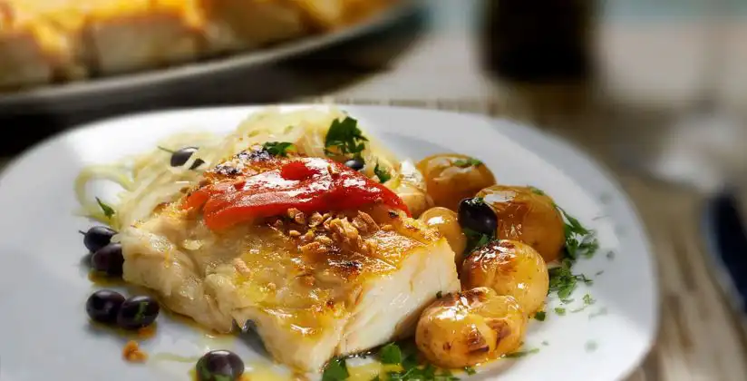

Gastronomia
Portugal possui uma gastronomia muito rica, diversificada e cheia de bons ingredientes. A nação de Camões, Saramago e Fernando Pessoa se destaca pela produção de vinhos, azeite de oliva e azeitonas. Confira abaixo a seleção que fizemos das comidas típicas de Portugal (cuidado para não babar na tela).
Conhecendo as comidas típicas de Portugal
Com uma dieta mediterrânea, os portugueses consomem muitos peixes, frutos do mar, azeites, azeitonas e legumes. São raros os pratos em restaurantes que misturam carboidratos e há uma opção variada de entradas, sopas e sobremesas.
1. Sardinha
Muito presente nas festas de São João e de Santo Antônio, as sardinhas são feitas assadas na grelha e servidas normalmente com pimentões verdes assados e batatas cozidas.
2. Bacalhau
O bacalhau é uma das comidas típicas de Portugal mais famosas, é o peixe mais consumido no país. Existem diversas formas de prepará-lo, como entrada ele é servido em forma de bolinho de bacalhau, pataniscas ou até mesmo cru (a punheta de bacalhau, como se fosse um ceviche).
Como prato principal, ele pode ser à Gomes de Sá, à Brás, com natas, assado com batatas, frito, com broa, entre diversas outras maneiras. Normalmente o peixe é mais barato do que a carne de gado e os portugueses comem realmente muito bacalhau, que além de ser muito saboroso, é bastante saudável. Uma delícia da culinária portuguesa.